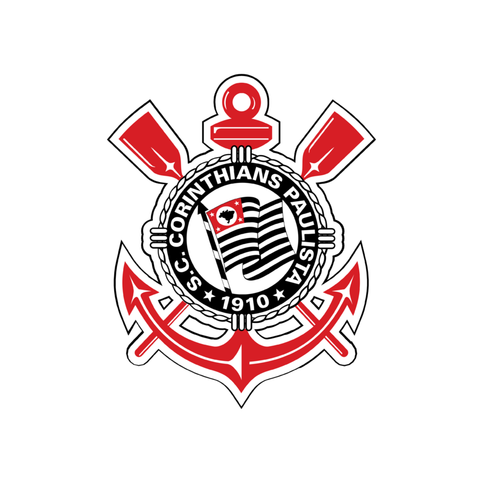

O Corinthians vive uma temporada conturbada em 2024. Após um início de ano marcado por inconsistências, o time enfrentou dificuldades no Campeonato Brasileiro, passando boa parte do torneio na zona de rebaixamento. Nem a troca de comando técnico, com a chegada de Ramón Díaz, conseguiu estabilizar a equipe. Com o término da competição se aproximando, o clube luta para garantir a permanência na Série A, transformando cada ponto em uma batalha crucial. Apesar do desempenho fraco no Brasileirão, o time teve momentos de destaque em outras competições, mas a prioridade agora é evitar a queda, que seria a segunda de sua história. Para isso, o Corinthians reforçou o elenco na janela de transferências, com nomes como Memphis Depay, e segue contando com o apoio da torcida para superar os desafios finais do ano
Com dificuldades para encontrar estabilidade no Brasileirão 2024, o Corinthians apostou em mudanças no elenco. Destaque para a chegada do experiente Memphis Depay, que trouxe um novo dinamismo ao ataque. Ao mesmo tempo, a diretoria intensificou a integração de jovens da base, como Giovane e Talles Magno, que têm mostrado potencial em momentos decisivos. Apesar disso, a falta de entrosamento ainda pesa, e o time segue com desempenhos irregulares
Além dos desafios em campo, o Corinthians enfrenta turbulências fora dele. O pedido de impeachment do presidente Augusto Melo intensificou os bastidores. A crise administrativa reflete na gestão do futebol, com dificuldades para fechar contratos e manter a confiança de investidores. Enquanto isso, a torcida tenta fazer sua parte, promovendo campanhas para ajudar o clube, como a vaquinha para quitar a Neo Química Arena, que arrecadou R$ 7,5 milhões em 24 horas
